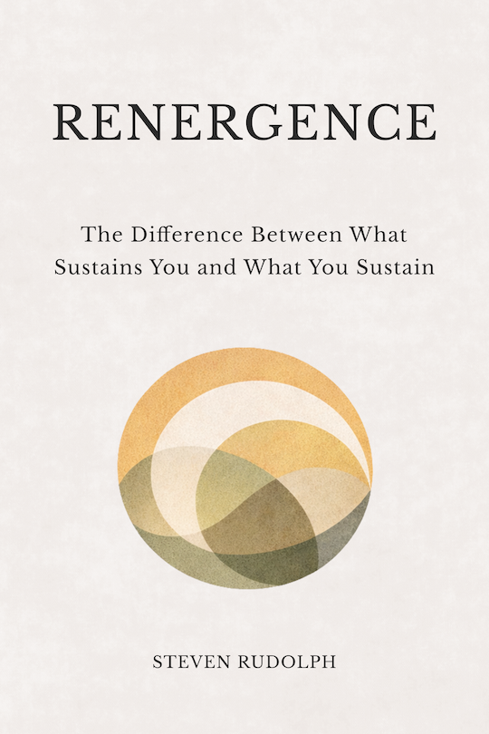

Steven Rudolph
Books

Renergence
A book about how people slowly lose access to what sustains them, how to stop participating in ways that quietly erode them, and what sometimes becomes possible when erosion stops.
More books in development:
Perception · When We Stop Seeing People · Multiple Natures
Tools
MN Mapper (MNTEST)
— A tool for making patterns of engagement visible.
Xavigate
— A platform for navigating alignment in life, work, and organizations.
About
I write about the structures that shape how we see, engage, and sustain ourselves within the systems we build and inhabit. My work examines the often-invisible costs of frameworks that begin with good intentions but drift toward depletion.
Contact
For inquiries or conversation.